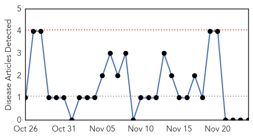
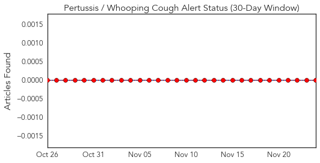
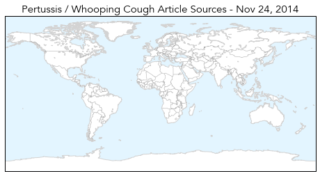
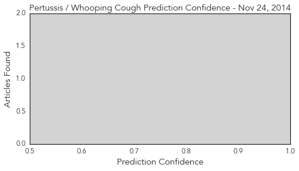
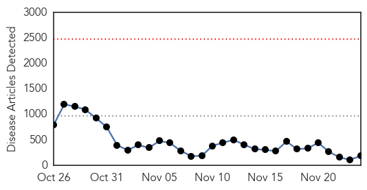
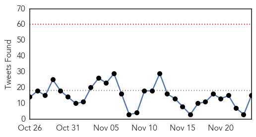
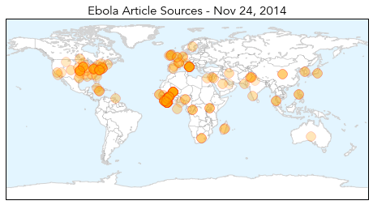
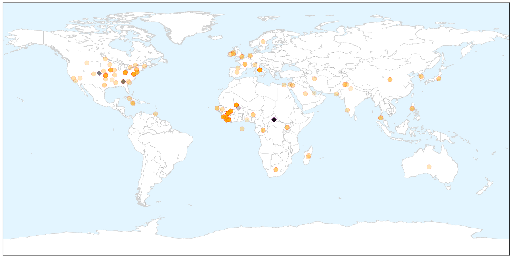
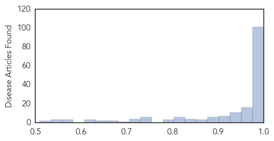

Pertussis
30-Day Web Trend
0 alerts, 0 warnings

30-Day Twitter Trend
0 alerts, 0 warnings

Article Locations

Article Confidences
Top Articles:
-
No articles found for Nov 24, 2014
Top Tweets:
-
No tweets found for Nov 24, 2014
Ebola
30-Day Web Trend
0 alerts, 0 warnings

30-Day Twitter Trend
0 alerts, 0 warnings

Article Locations

X

Article Confidences
Top Articles:
- 1.000
- Italian doctor contracts Ebola in Sierra Leone
- 1.000
- More Ebola cases surface in Mali
- 1.000
- Joint mission to Mali in support of Ebola response
- 1.000
- US looking past Ebola to prepare for next outbreak
- 1.000
- U.S. looking past Ebola to prepare for next outbreak
- 1.000
- NationalJournal
- 1.000
- Italian Doctor Tests Positive For Ebola In Sierra Leone
- 1.000
- HEALTHBEAT: US seeks to shore up world's blind spots in preparation for next disease outbreak
- 1.000
- U.S. looking past Ebola to prepare for next big outbreak
- 1.000
- Doctor working in Sierra Leone is Italy's first Ebola case
- 1.000
- CDC Looks Ahead To The Next Epidemic
- 1.000
- Emergency NGO doctor is first Italian to contract Ebola
- 1.000
- The next Ebola? Health officials try to prepare for future outbreaks
- 1.000
- Ebola outbreak: Doctor becomes first Italian to catch Ebola
- 1.000
- First suspected Ebola case emerges in Faisalabad
- 1.000
- First suspected Ebola case emerges in Pakistan
- 1.000
- US looking past Ebola to prepare for next outbreak - National
- 1.000
- Ebola crisis now 'stable' in Guinea, WHO says
- 1.000
- US looking past Ebola to prepare for next outbreak
- 0.999
- Government announces new funding to fight Ebola in West Africa
- 0.999
- Mali confirms eighth Ebola case, monitoring 271 people
- 0.999
- Government announces new funding to fight Ebola in West Africa
- 0.999
- First Ebola case for Italy as doctor working in Sierra Leone contracts disease
- 0.999
- Congo Ebola Outbreak Over, West Africa Epidemic Still Raging
- 0.999
- Guinea Stable While Mali Redoubles Efforts To Trace Contacts
- 0.999
- NewLink, Merck deal boosts prospects for Ebola vaccine
- 0.999
- 99 tested for Ebola in England: PHE
- 0.999
- UN: Deadline to curb Ebola will not be met
- 0.999
- 2 children test negative for Ebola in Columbus - Cleveland 19 News
- 0.999
- Mali confirms new Ebola case; toll 5
- 0.999
- Government announces new funding to fight Ebola in West Africa - Sierra Leone
- 0.999
- Mali confirms eighth Ebola case - MyNorthwest
- 0.998
- Swedish expert says Ebola risk has reduced
- 0.998
- Italian doctor gets Ebola in Sierra Leone
- 0.998
- The Herald: News
- 0.998
- Merck Partners With NewLink To Speed Up Work On Ebola Vaccine : Shots
- 0.998
- First case of Italian contracting Ebola -update
- 0.998
- Health officials have monitored 5 West Africa travelers in Utah
- 0.998
- Doctor working in Sierra Leone is Italy's first Ebola case
- 0.998
- Spread of infectious diseases being propelled by globalisation
- 0.998
- Italian Doctor Working in Sierra Leone Tests Positive For Ebola
- 0.998
- Lassa fever deaths reported in Benin
- 0.998
- 800 people under Ebola surveillance in Zim
- 0.997
- Italian doctor in Sierra Leone tests positive for Ebola
- 0.997
- "Dramatic improvement" in Ebola outlook in Liberia -U.S. general
- 0.997
- Spanish expert calls for developing Africa's health systems
- 0.997
- First case of Italian contracting Ebola - update 2
- 0.997
- First suspected Ebola case emerges in Pakistan
- 0.997
- Sudan Vision Daily
- 0.997
- Ebola news: 24 November in 15 seconds
Showing top 50 articles...
Top Tweets:
- 0.986
- RT: africa headlines West Africa: Ebola Crisis Update: [MSF]Since the Ebola outbreak in West Africa was official... http://t.c…
- 0.969
- Sierra Leone CDC DiseaseDetectives have been testing Ebola samples from two villages there Bombali & Kumala.
- 0.960
- RT: @AfricaStopEbola we say no Ebola !!! Go africa yes we can !!!!! Stop stop Ebola
- 0.939
- RT: AfricaStopEbola une chanson porteuse d'espoir contre Ebola
- 0.922
- The suspected Ebola case in Pakistan doesn't sound likely IMO because the patient was in a country (Togo) with no known Ebola cases.
- 0.915
- RT: Tiken Jah fakoly et mory kanté. Bénéfices de leur chanson iront à msf dans lutte contre Ebola AfricaStopEbola ht…
- 0.905
- RT: @AfricaStopEbola et nou disons non à l'ebola en afrique
- 0.884
- RT: Suspected Ebola patient in Pakistan is suffering from Dengue Fever. EbolaResponse
- 0.733
- RT: "La diffusion de la chanson sera accompagnée de panneaux d'information dans les pays touchés par Ebola" @tikenjahmusic " …
- 0.679
- RT: Dying children in West Africa can't be offered human comfort in their slow agonising death from Ebola. They need our help @…
- 0.675
- RT: RT:"D'autres chansons existentpar d'autres artistes africains :de nombreux efforts sont faits contre Ebola.…
- 0.598
- 10 Things You Need to Know About Ebola: 8: Mosquitoes are world’s deadliest animals but don’t carry Ebola. http://t.co/lE4yzjU4P7
- 0.574
- RT: 10 Things You Need to Know About Ebola: 8: Mosquitoes are world’s deadliest animals but don’t carry Ebola. http://t.co/lE4yz…
- 0.556
- 10 Things You Need to Know About Ebola: 7 People returning from countries w/ Ebola don’t pose a danger to you. http://t.co/1Mfm9n63R6
- 0.516
- RT: AfricaStopEbola une initiative de chanteurs africains pour lutter contre Ebola au profit de MSF https://t.co/d2lXZhghMX